SeisWave Lab：曲网格三维弹性波模拟的理论、实现与应用
SeisWave Lab：曲网格三维弹性波模拟的理论、实现与应用
修订日期：2026 年 10 月 17 日。
摘要 地形起伏会改变地震波的传播路径、自由表面反射及波型转换。为在结构化数据布局中描述连续地表，本项目采用浅部贴体、深部展平的三维曲网格，求解各向同性线弹性速度—应力方程。计算系统采用同位网格交替 MacCormack-DRP 空间差分与四阶段时间组合，提供 CPU/OpenMP 和 CUDA 双后端，并集成材料建模、三分量接收、波场切片和数据导出。本文依次介绍研究背景、理论方法、计算实现、界面使用及推导附录，明确时间稳定性、空间分辨率和物理精度之间的区别。已有内点分析与计算检查仅支持其各自条件下的结论；曲面表面波、突变界面及人工边界仍需进一步定量验证。
关键词 弹性波；曲网格；有限差分；自由表面；数值频散；CUDA；三分量地震记录
1 背景
1.1 研究问题
三维弹性波正演通过给定介质、震源和边界条件，计算地下质点速度与应力的时空演化，可用于传播机理分析、观测系统设计和反演方法研究。地表起伏尤其影响近地表散射、反射相位和表面波；如果以台阶近似连续地形，几何离散误差可能与目标地质响应叠加。
曲网格通过坐标映射使计算层贴合地表，将复杂几何转化为方程中的度量系数。它保留结构化索引和邻点访问，便于并行计算，同时引入网格拉伸、倾斜及曲面边界闭合问题。同位网格与牵引镜像处理的三维理论可参见 Zhang、Zhang 与 Chen（2012）。文献中的准确性结论属于其原始算法及算例，不直接构成本项目的精度证明。
1.2 项目定位与适用范围
SeisWave Lab 是一个面向交互式数值实验的三维弹性波工作台：在统一会话中编辑几何与物性、布置震源及接收器、选择计算后端、观察传播并导出原始数据。数值方法参考 CGFD3D 的曲网格同位有限差分路线，界面围绕“建模—采集—运行—显示—导出”组织。
当前模型假设介质静止、各向同性、线弹性，支持均匀与分层物性、正弦起伏地表、竖直体力源及节点接收。模型不包含流体、黏弹性 Q 衰减、各向异性、非线性和动态破裂。侧面与底面采用海绵吸收区；完整 CPML/CFS-PML、任意外部模型导入和多 GPU 分解属于后续研究内容。
1.3 数值实验的基本判据
计算能够完成，只说明给定运行中没有触发相应失败条件。数值稳定性关注扰动是否异常增长；频散与耗散关注波速和振幅的离散误差；物理准确性还要求正确表示震源、几何、材料界面和边界。缩短时间步主要控制时间离散与稳定性，不能补偿空间欠采样。
评价本项目应同时检查原始接收波形、到时、振幅、网格加密结果及边界敏感性。波场图适合展示传播形态，但自动色标、显示增益和透明度会改变视觉对比，图像平滑程度不构成无频散判据。
2 原理
2.1 各向同性速度—应力方程
采用右手坐标系，z 轴向下为正。状态向量为
在小应变条件下，动量守恒和线弹性本构关系写为
重复指标按三维求和，$\sigma$ 对称，$f_i$ 为单位物理体积的力。材料参数由输入的纵波速度、横波速度和密度计算：
弹性能正定要求 $\rho>0$、$\mu>0$、$K>0$，不要求 $\lambda$ 单独为正。当前实现要求 $V_s>0$，不能用零横波速度直接表示流体。速度单位为 m/s，应力为 Pa，密度为 kg/m³，时间为 s；显示压力定义为 $p=-\operatorname{tr}\sigma/3$，压缩为正。
初始速度与应力均为零。内部材料界面按逐节点弹性系数表示，尚未引入专门的高阶界面通量修正，因此光滑均匀内点的误差分析不能直接推广到物性突变处。
2.2 曲网格映射与物理导数
计算坐标 $(\xi,\eta,\zeta)$ 具有相同名义间距 h，物理坐标映射为
其中 A 为地表起伏振幅，L 为水平波长。展平函数为
地表 $F(0)=1$，深度达到 D 后 $F=0$，端点的一至四阶导数为零。浅层网格贴合地形，深部恢复水平，减少地形变形对全域的影响。
令 $\mathbf a_\alpha=\partial\mathbf r/\partial\alpha$ 为协变基，计算
标量场的物理梯度由链式法则得到：
实现中以坐标差分构造几何度量，平地直接使用精确单位度量。所有物理节点必须具有正且有限的 J。点值链式离散不自动满足离散度量恒等式，也不自动构成全域守恒格式。
N 个节点包含 N−1 个间隔，名义跨度为 $(N-1)h$。真实包围盒从映射后的物理坐标求得，包含海绵区、排除虚点；其竖直高度与单列当地厚度不同。
2.3 空间离散与时间组合
九个状态分量定义于同一节点。内点前向差分与后向差分分别为
其中 $(a_{-1},a_0,a_1,a_2,a_3)=(-0.30874,-0.6326,1.233,-0.3334,0.04168)$。DRP 的设计目标是在一定波数范围内改善离散色散关系，相关思想见 Tam 与 Webb（1993）；“优化”不意味着任意短波均无频散。
每个完整时间步使用四阶段权重，三个方向的前后差分按八步顺序循环，并在每个阶段换向。令 $\mathcal L_{n,s}$ 为含源和阻尼的阶段右端，$\mathcal P$ 为表面应力投影，则主要状态更新为
每次右端计算还需准备相应虚点及边界闭合。有限差分承担空间近似，阶段组合承担时间推进，两者共同决定数值传播特性。由于 $\mathcal L_{n,s}$ 随阶段改变，式（8）不能直接套用固定空间算子的经典 RK4 四阶结论。保留有限小数位的系数还存在矩条件舍入偏差，具体见附录 B。
2.4 曲面自由表面
无外加表面载荷时，顶面满足零牵引条件
其中 $\mathbf n$ 为曲面单位法向。法向正负不影响零牵引条件。通过将速度梯度分为已知切向部分与未知 $\partial_\zeta\mathbf v$，可由 $\dot\sigma\mathbf n=0$ 解出顶面速度的计算竖向导数，局部求解过程见附录 C。
跨越顶面的动量差分使用度量加权牵引通量
对顶面法向计算通量取 $\mathcal F^\zeta(0)=0$、$\mathcal F^\zeta(-\ell)=-\mathcal F^\zeta(+\ell)$，而不是对各 Cartesian 应力分量独立作奇镜像。牵引镜像的基本方法见 Zhang 与 Chen（2006）。实际近表面处理还包括速度导数降阶和阶段应力投影。
投影后零牵引是施加的约束，不能单独用来证明反射波准确。评价该边界还应考察投影前的牵引变化率残差，以及 P/S 反射、模式转换和 Rayleigh 波的到时、相位与振幅。
2.5 侧面及底面海绵吸收
海绵在九个状态方程右端加入 $-b(\mathbf r)U$。设各轴有效宽度为 $w\alpha$ 个间隔，到对应外边界的节点距离为 $d\alpha$，则
X、Y 分别取两侧的最近距离，Z 只取到底面的距离；关闭的方向不贡献阻尼。有效宽度不超过该轴节点数的三分之一。顶面内部不设置竖向海绵，但顶面靠近侧边的位置仍受侧向阻尼。
海绵是一种人工衰减区，并不等价于 CPML，也不表示材料的物理 Q 衰减。加大强度可能增强边界过渡处的反射并压缩时间步；加宽海绵会占用更多物理节点。吸收区叠加开关只控制显示，求解器中的吸收启停与宽度修改需重新应用。
2.6 震源时空离散
当前震源为竖直体力，时间函数为 Ricker 子波：
力幅值 $F0=2\times10^8$ N，通过以源节点为中心的 5×5×5 高斯支撑分配。令 $g{abc}=e^{-(a^2+b^2+c^2)/2}$、$S=\sum g_{abc}$，其中 $a,b,c\in[-2,2]$，则
该归一化保持离散总力，但固定五节点支撑意味着加密网格会缩小震源的物理宽度。严谨的网格收敛实验应保持物理源宽度和总力一致，或明确量化源宽变化的影响。竖直体力在均匀无限介质中直接辐射 P、S 波；各向同性爆炸源的直接辐射主要为 P 波，二者不能仅按同一主频比较。
2.7 时间步、CFL 与终止条件
令 M 为全域逆度量矩阵的最大 Frobenius 范数，$L{\min}$ 为相邻节点构成的八组平面所给出的最小几何距离，$b{\max}$ 为最大阻尼率。当前时间步规划采用
关闭海绵时忽略阻尼项。平地有 $M=\sqrt3$、$L_{\min}=h/\sqrt3$。C 默认 0.8，输入范围为 0.02 至 0.8；这是当前实现的工作范围及已检查配置范围，不能解释为任意曲网格的严格稳定上界。几何质量、阶段换向和边界闭合均影响实际稳定性。
给定目标时长 T，先将时间步对齐为
若设置正步数上限 $N{\rm cap}$，实际推进 $N=\min(N_T,N{\rm cap})$ 步；上限为零时推进至 T。截断步数不改变式（15）的时间步，终止时刻为 $N\Delta t$，可能小于 T。默认 T=1 s、上限 5000 步；单次最多推进 20000 步。接收记录包含 t=0，因此样本数为 N+1。
“CFL 安全因子”和实际无量纲步长 $V_{p,\max}\Delta t/h$ 不是同一数值。不同程序还可能将维数、差分系数和度量因子吸收到 CFL 定义中，比较时必须还原实际时间步与离散格式。
2.8 空间采样与高频分辨率
均匀介质中每波长采样数为 $n\lambda=v/(fh)$。曲网格以物理最大相邻边长 $h{\max}$ 和最小横波速度给出参考指标
Ricker 子波并非严格带限；在 2.5f₀ 处的谱幅约为峰值的 $6.25e^{-5.25}\approx3.28\%$，因此以 2.5f₀ 作为采样参考频率。该选择不等价于硬截频。最大边长指标也只是方向分辨率的代理量，不能涵盖所有倾斜传播方向及表面波。
两点/波长是均匀采样的 Nyquist 必要条件，不是工程精度条件。以参考频带内至少八点/波长作为起始设计，仍需按允许的相位、振幅误差检验；低速薄层、Rayleigh 波和陡峭地表可能提出更严格要求。有关边界离散对表面波精度的影响可参见 Bohlen 与 Saenger 的研究报告。
3 实现过程
3.1 模型初始化与会话建立
输入参数先完成几何、材料正定性、源支撑和接收容量校验，再进行主机及显存容量预检。模型初始化依次生成物理坐标、度量与 Jacobian、材料场、阻尼场、时间步、源空间权重及接收位置，随后建立计算工作区和初始诊断。新会话只有在初始化成功后才替换旧会话。
控制面板中的编辑参数与已生效会话分开保存。修改间距、节点数、地形、材料或边界后，需要应用并重建；当前状态栏 dt 始终属于生效会话。几何变化时必须重新计算度量，不能用旧模型的 M 或 $L_{\min}$ 推断新时间步。源频率、最大 Vp 和海绵强度也分别影响式（14）的不同限制项。
3.2 分层物性映射
均匀材料使用统一弹性系数；分层模式逐节点存储 $\lambda,\mu,\rho$。默认按计算深度 $d=kh$ 归层，使固定 k 上所有 i、j 节点使用相同物性。这样界面沿曲网格层连续，其物理厚度可随地形映射改变。
另有当地埋深 $d=z-H(x,y)$ 和基准深度 $d=z$ 两种归层方式，适合不同的地层解释。固定物理深度界面通常穿越多层曲网格，逐节点归层因而可能形成台阶；三种定义不应混用。累计厚度边界上的节点归入下层，末层自动延伸至模型底部。
| 黄土覆盖层示例 | 厚度（m） | Vp（m/s） | Vs（m/s） | 密度（kg/m³） |
|---|---|---|---|---|
| 干黄土 | 5 | 550 | 250 | 1550 |
| 湿润／压实黄土 | 5 | 800 | 350 | 1800 |
| 黏土／古土壤 | 20 | 1500 | 700 | 2050 |
| 砂岩 | 20 | 2500 | 1300 | 2250 |
| 硬岩基底 | 延伸至底部 | 4000 | 2300 | 2650 |
薄层的几何表达和波长分辨率是两个条件。h=1 m 可用五个间隔表示 5 m 层厚，但仍需按该层 Vs 和有效频带检验波长采样；不能据层厚已离散就认定动态波形准确。
3.3 单步推进与数值诊断
每个完整步保存基础场，依次执行四阶段虚点准备、空间右端、震源和自由表面更新，再组合候选场。完成有限性及能量检查后，采样接收器三分量并提交时间、步号和计时。失败步不作为新的有效记录提交，故障会话停止。
体积加权机械能用于监测异常增长：
剪应力在 $\mathbf s:\mathbf s$ 中计入两次。震源输入能量，海绵消耗能量，边界投影和差分也可能引入数值耗散。能量监视是运行诊断，尚不能据此宣称实现离散能量守恒或获得任意配置的稳定性证明。
3.4 CPU 与 CUDA 后端
CPU/OpenMP 与 CUDA 采用相同的 Float64 点算子、物理参数、阶段顺序和接收几何。九场使用分量分离布局，CUDA 将传播工作区常驻显存；交互显示只回传所需切片、归约统计及接收样本，显式体积导出时才下载完整场。
应用默认优先使用可用 CUDA，否则启动 CPU；显式选择 CUDA 的初始化失败会报告错误。切换后端需要重建并从 t=0 开始。CPU/CUDA 一致性能够发现实现差异，但两者使用同一离散方法，一致并不意味着共同的离散误差为零。
按相同配置完成相同步数后，以 $S=t{\rm CPU}/t{\rm CUDA}$ 表示应用层加速比。推进计时覆盖完整有效步、诊断、采样及必要同步，初始化另列，不包括绘图、暂停和导出。公平比较还应固定实际 dt、线程数、精度、源、材料、边界和接收数量，并报告硬件、重复次数与计时波动。截图状态栏耗时不作为受控性能实验结果。
3.5 接收排列与容量
接收器直接读取物理节点的 Vx、Vy、Vz，当前不做任意空间位置插值。上限为 1024 个接收位置，每位置三分量。对某轴 N 个节点、零基起点 s 和正整数间隔 d，允许的位置数为
X-Y 面阵同时满足两个方向几何容量和 $nxn_y\le1024$，固定另一方向道数时，还受 $\lfloor1024/n{\rm other}\rfloor$ 约束。面阵先 X 后 Y 编号。起点 −1 表示起点在轴中心，不表示整条测线以轴中心对称展开。
自动 X 线使用索引 2 至 Nx−3，故 Nx=200 时为 196 个位置，Nx=300 时为 296 个位置；自定义起点 0、间隔 1 可使用 300 个位置。容量包含海绵区内节点，自动端部裕量也不保证避开吸收区。为研究未阻尼波形，应结合吸收区叠加安排观测位置。
3.6 数值分析与已有证据
针对传播核，已有均匀内点 P/S 波、几何度量、自由表面牵引变化率、双后端九场与接收一致性等检查。1024 位置面阵检查覆盖全部位置及三分量，包括末端线程块；这支持所检查条件下的完整采样，不等价于任意大排列的长期性能或物理精度保证。
为隔离内点频散，将真实九场算子的八步放大矩阵与八阶交错空间差分／二阶交错时间格式比较。控制条件为均匀介质 Vp/Vs=3000/1700 m/s、x 方向传播、$\Delta t V_p/h=0.1$，无地形、震源、材料界面和外边界。分析方法见附录 D。
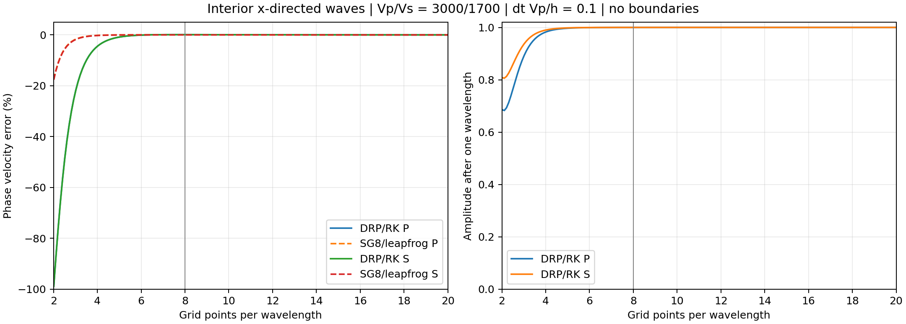
图 1 固定无量纲时间步下的内点 Fourier 分析。横轴为每波长采样数，左图为相速相对误差，右图为交替 DRP 格式传播一个物理波长后的振幅比。结果不代表完整曲面模型误差。
| 主频与波型，h=10 m | 主频处采样数 | 交替 DRP 相速误差 | 八阶交错格式相速误差 |
|---|---|---|---|
| 30 Hz，P | 10.000 | +0.0718% | +0.0162% |
| 30 Hz，S | 5.667 | −0.2166% | −0.0050% |
| 60 Hz，P | 5.000 | −0.8573% | +0.0112% |
| 60 Hz，S | 2.833 | −29.2953% | −2.6821% |
短波处两种格式均有误差，当前五点交替格式在该 S 波条件下的误差更大。差异不能全部归因于曲网格本身；比较实际画面还需统一震源类型、物理源宽度、边界和显示范围。相速误差表属于指定内点和时间步的分析，不能视为所有方向的误差上界。
30、50、60 Hz 的加密曲网格运行已完成 0.12 s 源时间窗，相关检查支持有限性、时间推进和表面变化率闭合。源时间窗完成并不表示远场、Rayleigh 波或后期边界反射误差已经收敛。用于界面展示的详细参数与结果见附录 E。
3.7 后续研究与升级方向
| 研究方向 | 目标与评价方法 |
|---|---|
| 传播格式 | 比较更高阶、低色散或可切换内点算子，测量各方向 P/S 相速、耗散及完整波形误差 |
| 震源一致性 | 增加爆炸与矩张量源，固定总力／总矩和物理支撑，完成解析解与加密对照 |
| 曲面自由表面 | 建立平面反射、曲面散射、Rayleigh 波及模式转换基准，报告到时、相位、幅值和收敛率 |
| 吸收边界 | 引入 CFS-PML/CPML，与海绵比较低频、掠射和角点反射率及长期稳定性 |
| 分层界面 | 检验反射／透射系数、网格归层位置敏感性及高对比介质误差 |
| 并行与存储 | 研究核融合、缓冲复用、设备端记录批缓存和流式输出，按相同精度目标比较总成本 |
| 规模扩展 | 评估分区加密、多 GPU 和外部模型导入，建立容量、通信及坐标一致性标准 |
升级应围绕明确误差目标开展；仅放宽 CFL、降低采样警告门槛或调整显示增益，不能解决空间分辨率不足。
4 界面介绍
4.1 工作区与建模
顶层保留“建模、采集、运行、显示、导出”横向入口。左侧为参数与诊断，中部为三维视图和 X-Z、Y-Z、X-Y 切片，接收区显示道集及单道三分量。面板支持停靠、关闭和重新打开，语言与主题即时切换。
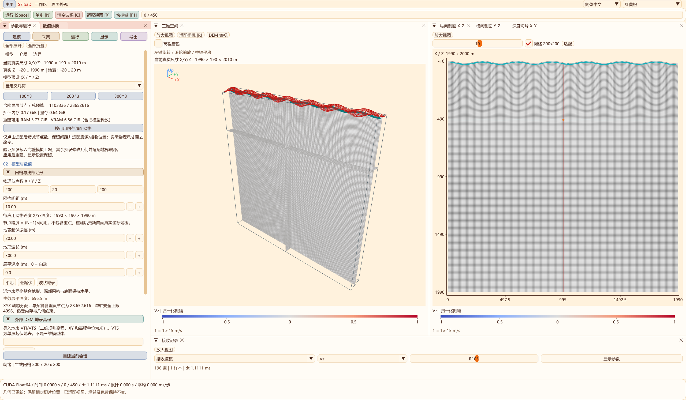
图 2 基准会话初始界面：200×20×200 节点，h=10 m，Vp/Vs/ρ=3000/1700/2200，f₀=12 Hz，A=20 m，L=300 m，源索引（100，10，50）。坐标向下为正，真实包围盒约为 1990×190×2010 m。此配置用于界面与传播展示，参考频带的最短波采样仅约 5.23，不作为精度达标算例。
建模时先确定物理研究域，再按波长选择间距和节点数。100³、200³、300³ 等几何预设载入节点数、间距和地形，保留物性、主频与运行设置，并适配越界索引；完整基准预设还包含材料、源和停止条件。每轴允许 8 至 300 个物理节点，三层虚点使最大存储尺寸为 306³。Float64 CUDA 均匀 300³ 的主要工作区约需 16.67 GiB 显存，尺寸允许值并不保证当前设备能够分配。
“按可用内存适配网格”保持 h、减少节点数，因此同时缩小物理区域；它不保持原研究域。应用前应重新确认源、接收、吸收宽度和物理尺寸。
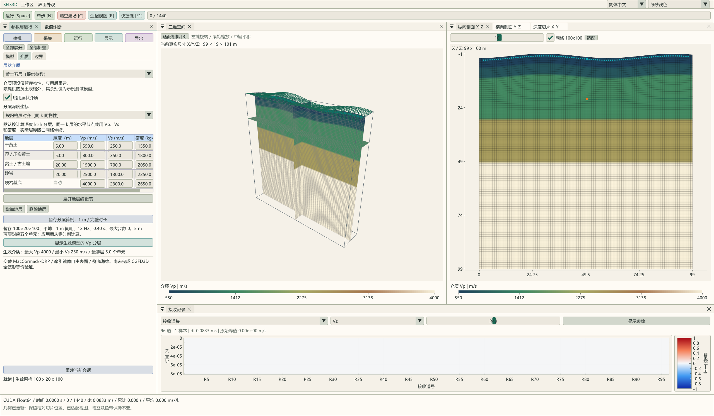
图 3 100×20×100、h=1 m、A=2 m、L=60 m 的黄土五层材料展示。t=0，仅展示材料映射；没有据此评价动态波场。
4.2 震源与观测系统
震源控件指定从零开始的 X/Y/Z 索引，并显示对应物理坐标。中心需要距物理边界至少两格以容纳高斯支撑。修改 h 时，同一源索引对应的物理位置会改变，应重新检查埋深和与边界的距离。
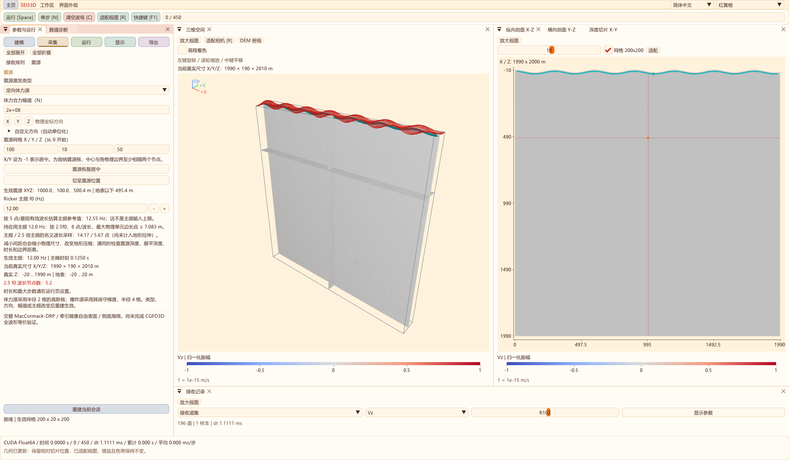
图 4 基准会话的震源设置。采样建议根据当前介质和实际物理边长给出，提示值不代表频率输入上限。
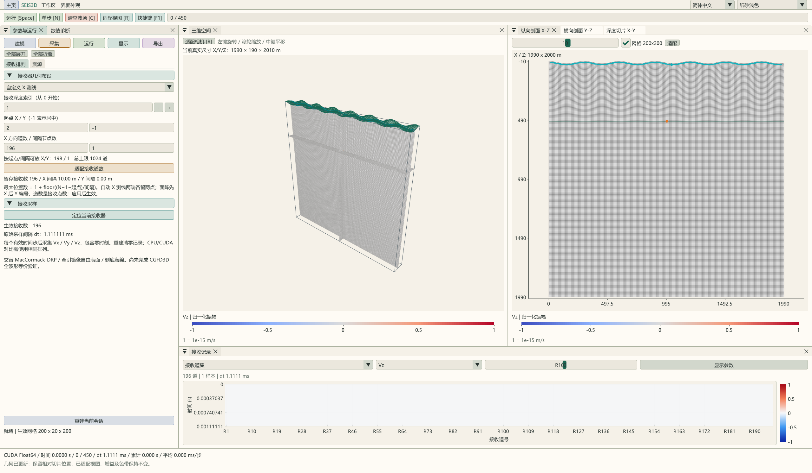
图 5 基准会话采用 X 向 196 位置排列，起点为 2，间隔为 1，Y 起点取中心，深度索引为 1。三分量共用同一位置。
接收器可选自动 X 线、自定义 X/Y 线和 X-Y 面阵。应同时检查节点间隔对应的物理距离、末点索引和吸收区域。空间排列不影响求解器时间步，但其数量增加采样、存储和回传成本。
4.3 运行控制与波场过程
选择计算后端，设置 CFL、目标时长和步数上限后应用重建，核对生效 dt、实际结束时刻和采样指标，再启动推进。“清空波场”原位重置场、记录、时间与推进计时，保留当前几何和 dt；改变模型需重新应用。
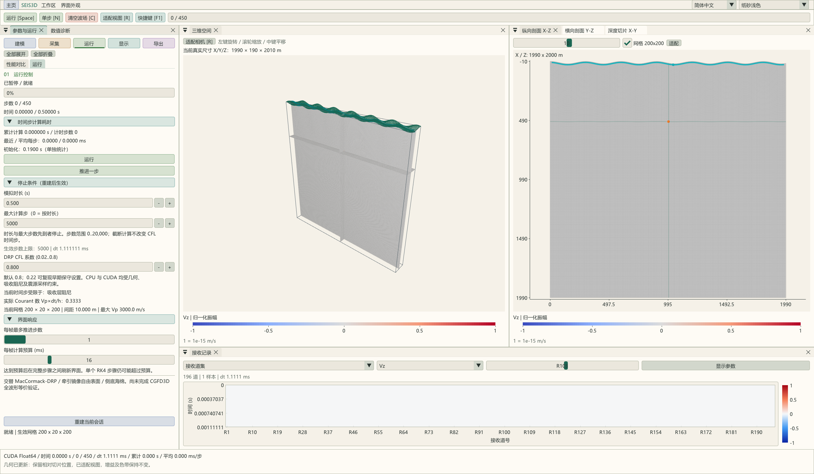
图 6 基准会话设 T=0.5 s、步数上限 5000，实际 dt=1.111111 ms，450 步完成，记录含 451 个样本。该预设时长与程序默认 1 s 不同。
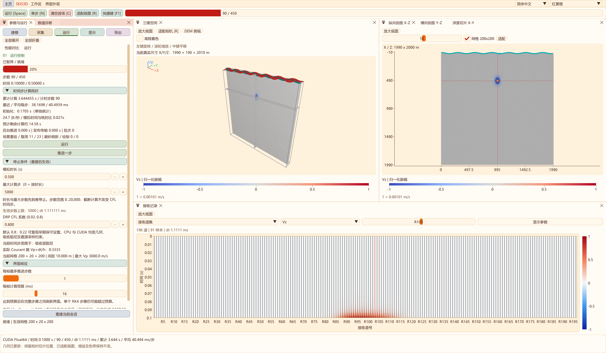
图 7 同一基准会话第 90 步，t=0.10 s。
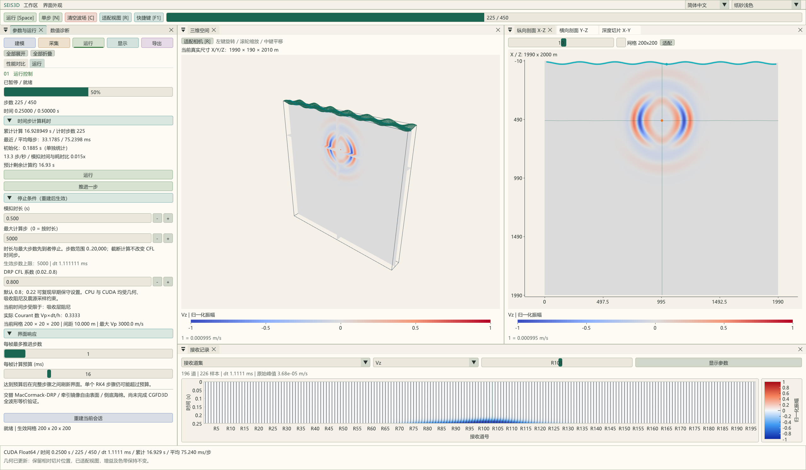
图 8 同一基准会话第 225 步，t=0.25 s。
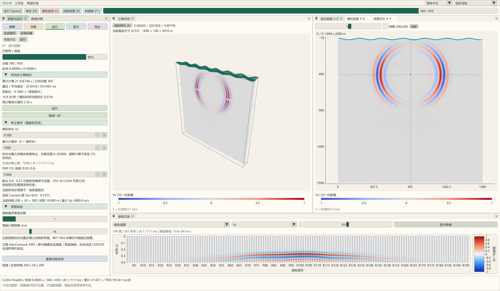
图 9 同一基准会话第 360 步，t=0.40 s。图 7—9 的自动幅值范围随时间更新，不能根据颜色比较跨时刻绝对振幅。窄 Y 域和人工边界也影响后期波场。
4.4 波场、材料与网格显示
二维切片由 ImGui 绘制曲网格单元三角形和网格线，三维视图由 OpenGL 离屏渲染。显示数据来自同一三维求解器。X-Y 视图是固定计算层 k 的曲面切片，不保证全域物理高程相同。
波场与材料采用独立色带、范围和色标。波场先按 $q=u\,g/u_{\rm ref}$ 映射，g 为显示增益；默认归一化刻度为有符号量 −1 至 1、速度模 0 至 1，并标明单位归一值对应的物理幅度。切换归一化标签不改变原始 SI 数据。模型 Vp、Vs、密度始终使用独立物性范围。
叠加模式下透明度随波场幅值变化，混合后的单个颜色不再唯一对应某个物理量，应结合两条色标解释。定量跨帧比较需固定物理范围、增益和图层设置。
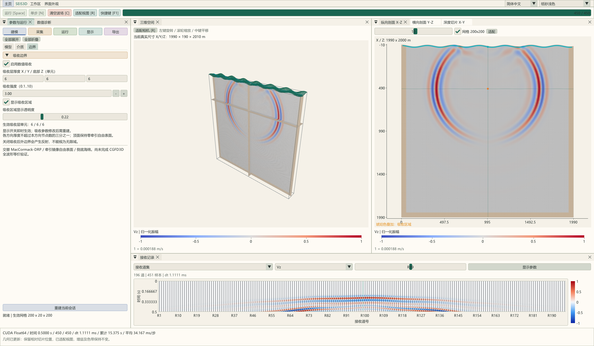
图 10 实际曲网格及海绵区域叠加。关闭叠加只隐藏区域标记，是否施加吸收仍由运行参数决定。
4.5 地震记录与显示处理
道集可显示单分量多道记录，单道视图可并列比较 Vx/Vy/Vz。原始记录保存每个有效时间步的节点速度。AGC、逐道归一化和色带变换作用于显示副本，不改写采样数据。
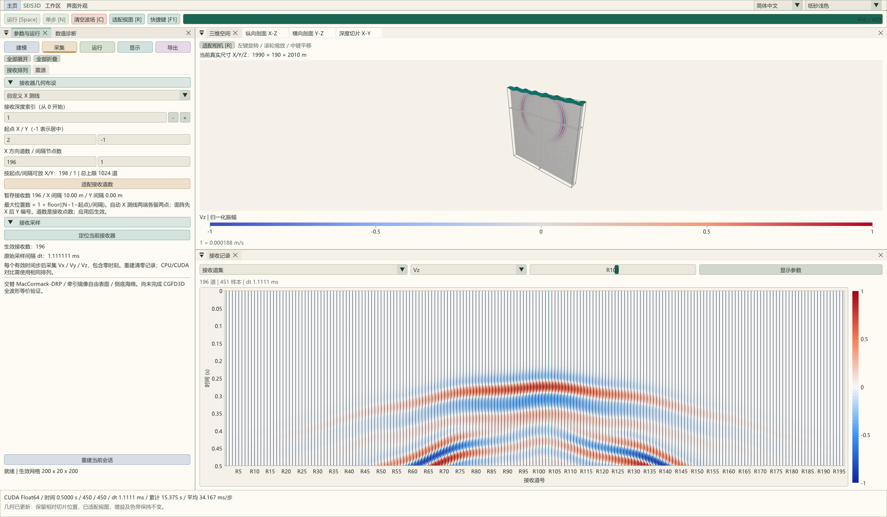
图 11 基准会话完成时的原始记录显示。幅值解释应结合所选分量、单位及当前显示范围。
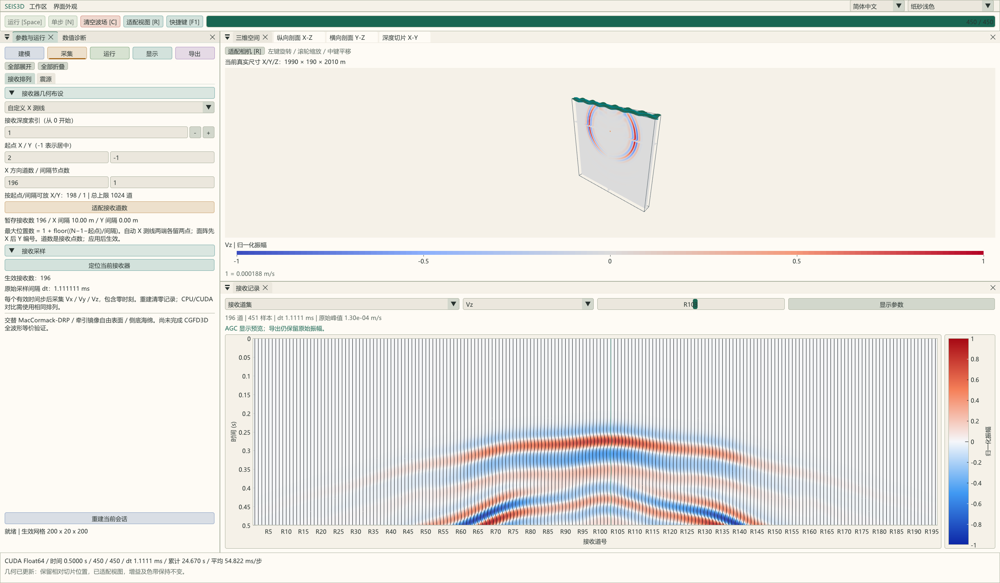
图 12 与图 11 相同的原始数据，经显示 AGC 增强弱信号。处理后的幅度不能直接用于物理振幅比较。
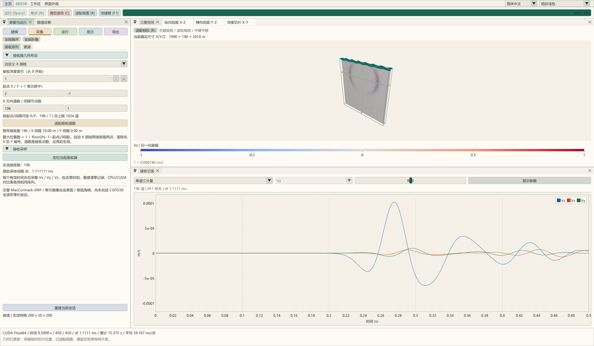
图 13 单位置三分量视图。逐道归一化会消除不同道的相对振幅关系，应在定量分析时关闭或使用原始导出。
长记录预览存在抽稀：波形最多预览 2048 点，密度图最多 1024 个时间行。显示细节减少不意味着原始数据少采样。面阵展平后的相邻道号也未必对应同一条物理测线，解释同相轴时须结合接收坐标。
4.6 导出与操作键
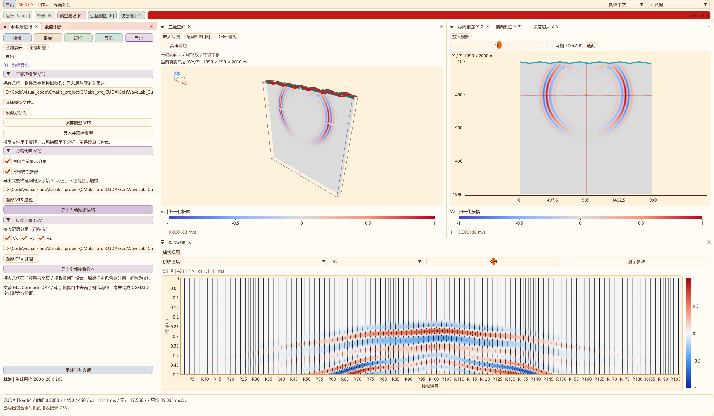
图 14 导出区支持原始接收 CSV 和曲网格 VTS 快照。导出不包含显示增益、AGC 或色带变换，字段定义见附录 F。
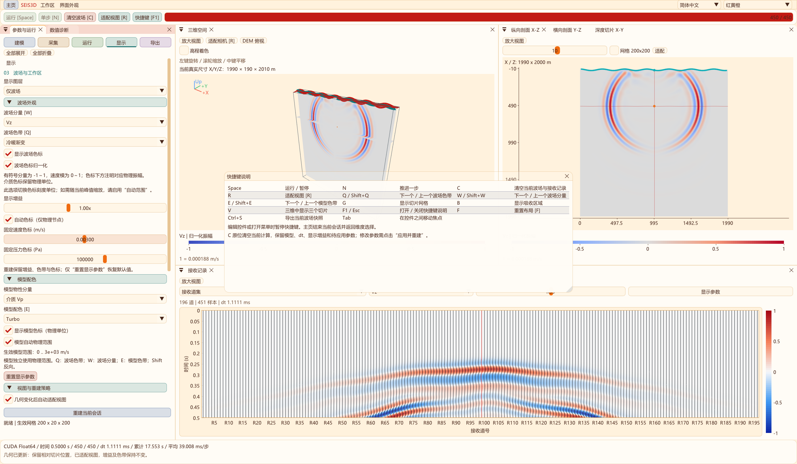
图 15 F1 快捷键帮助。输入框编辑或菜单交互期间，工作区快捷操作受到抑制，避免误触。
| 按键 | 功能 |
|---|---|
| Space / N | 运行或暂停／单步 |
| C | 清空当前波场、接收记录及推进计时 |
| Q / W / E | 波场色带／波场分量／模型色带；Shift 反向切换 |
| G / B / V | 网格／吸收区叠加／三维切片显示 |
| R / F | 适配视图／恢复工作区布局 |
| F1 / Esc | 显示或关闭快捷键帮助 |
| Ctrl+S | 导出 VTS 快照 |
5 附录
附录 A：符号、几何与材料约定
| 符号 | 含义 | 单位或约定 |
|---|---|---|
| $\mathbf r=(x,y,z)$ | 物理坐标 | m，z 向下 |
| $(\xi,\eta,\zeta),h$ | 计算坐标、名义间距 | m |
| $N_x,N_y,N_z$ | 物理节点数 | 不含三层虚点 |
| $J$ | 映射 Jacobian | 无量纲，必须为正 |
| $\nabla\xi,\nabla\eta,\nabla\zeta$ | 逆度量向量 | 计算坐标以 m 计时为无量纲 |
| $A,L,D$ | 起伏振幅、水平波长、展平深度 | m |
| $\rho,V_p,V_s$ | 密度、纵波速度、横波速度 | kg/m³，m/s，m/s |
| $\lambda,\mu,K$ | Lamé 系数、剪切模量、体积模量 | Pa |
| $f_i,F_0$ | 体力密度、源总力幅值 | N/m³，N |
| $b,\beta$ | 海绵阻尼率、无量纲强度 | s⁻¹，无量纲 |
| $T,\Delta t,f_0$ | 目标时长、实际时间步、主频 | s，s，Hz |
令 $Z_b=(N_z-1)h$，自动展平深度采用
非平地模型还需满足 $D\ge4h$、$D>2.6|A|$ 且不超过底深，并通过离散 J 检查。对于式（3）的连续映射，$J=1+HF’(\zeta)$；离散计算仍以构造出的坐标度量为准。压缩和倾斜越强，波动允许时间步通常越小。
附录 B：差分系数与方向调度
| 前向偏移 ℓ | −1 | 0 | 1 | 2 | 3 |
|---|---|---|---|---|---|
| 系数 $a_\ell$ | −0.30874 | −0.6326 | 1.233 | −0.3334 | 0.04168 |
0 表示前向、1 表示后向，八个完整步的初始 X/Y/Z 方向为
阶段 s 从零计数，各轴方向为 $(d_{n,\alpha}+s)\bmod2$。近顶面第一内层的速度计算竖向导数使用两点模板，第二内层使用偏移 0、1、2 和系数 −7/6、8/6、−1/6，反向模板作镜像并反号；第三内层起使用完整五点模板。顶面速度导数由自由表面条件闭合；动量采用相应牵引通量处理。
当前小数系数满足
因此单个模板对常量的导数并非精确为零；其误差为常量乘 $-6\times10^{-5}/h$。交替组合可能抵消部分偏差，但不能据此假定所有情形均严格抵消。应将完整方向周期、边界和系数精度一并纳入一致性、收敛及稳定分析，本文不赋予整体算法未经测量的形式阶数。
附录 C：零牵引变化率闭合的局部推导
令 $\mathbf c=\nabla\zeta$、$\mathbf n=\mathbf c/|\mathbf c|$，定义已知梯度
将 G 代入本构关系，令 $\dot\sigma\mathbf c=0$，得到
系数矩阵在切向和法向上的特征值分别为 $\mu|\mathbf c|^2$ 与 $(\lambda+2\mu)|\mathbf c|^2$，故
材料满足式（2）的正定条件、度量非退化时该局部系统可逆。阶段状态还使用
去除法向牵引。此投影保留切向应力，不直接改变速度。侧向海绵在满足零牵引的应力上作用时，其 $-b\sigma\mathbf n$ 项也为零；零牵引推导与无表面外载荷的假设一致。
附录 D：内点 Fourier 对照的定义
令 $q_i=\hat q e^{\mathrm i i\theta}$，$\theta=kh$。式（7）的符号为
将符号代入九场方程，按真实阶段构造每步放大矩阵 $G_n$，八步周期为 $\mathcal G=G_7\cdots G_0$。零波数方向保留式（B2）对应的小数系数残差。通过速度极化识别 P/S 分支，并沿物理传播分支选择相位。对特征值 γ，有
整数 m 根据物理分支连续性确定，$\lambda{\rm wave}=2\pi/|k|$，相速误差为 $100(c{\rm num}/v-1)\%$。表中误差使用 f₀ 对应的波长，不能直接用于 2.5f₀ 的短波尾部。
对照八阶交错空间差分使用系数
这种交错速度—应力离散的经典背景见 Virieux（1986）。图 1 只比较指定平坦均匀内点，既未引入海绵与自由表面，也未使用实际基准会话的 dt；不能将该图解释为完整程序的验证误差。
附录 E：采样设计与图示算例参数
对 Vp/Vs=3000/1700 m/s、h=10 m，名义采样数如下；真实曲网格拉伸后可能更低。
| f₀（Hz） | P：f₀ | S：f₀ | P：2.5f₀ | S：2.5f₀ |
|---|---|---|---|---|
| 12 | 25.00 | 14.17 | 10.00 | 5.67 |
| 30 | 10.00 | 5.67 | 4.00 | 2.27 |
| 50 | 6.00 | 3.40 | 2.40 | 1.36 |
| 60 | 5.00 | 2.83 | 2.00 | 1.13 |
若以 $n_{\lambda,\rm ref}\ge8$ 为起始设计，则
| 最小 Vs | 30 Hz 的最大物理边长 | 50 Hz | 60 Hz |
|---|---|---|---|
| 1700 m/s | 2.833 m | 1.700 m | 1.417 m |
| 250 m/s | 0.417 m | 0.250 m | 0.208 m |
式（E1）是采样设计参考，不是所有表面波及材料界面的统一精度标准。保持物理区域并将 h 减半，三维节点量约增至八倍，波动时间步约减半，固定时长的总工作量通常接近十六倍；源采样或阻尼主导时间步时，该估算需相应调整。
高频图示均使用 CUDA、128×64×144 节点、Vp/Vs/ρ=3000/1700/2200，A=2 m、L=100 m，自动展平，源索引（64，32，24），T=0.12 s，步数上限 0，C=0.8，X/Y/底面海绵宽度 6/6/6、强度 3，自动 X 线 124 个位置，Y 居中、深度索引 1。
| 图示 | f₀ | h | 实际 dt | 完成步数 | 参考最短波采样数 |
|---|---|---|---|---|---|
| 图 16 | 30 Hz | 2.5 m | 0.277778 ms | 432 | 8.724 |
| 图 17 | 50 Hz | 1.25 m | 0.138889 ms | 864 | 10.088 |
| 图 18 | 60 Hz | 1.00 m | 0.111111 ms | 1080 | 10.320 |
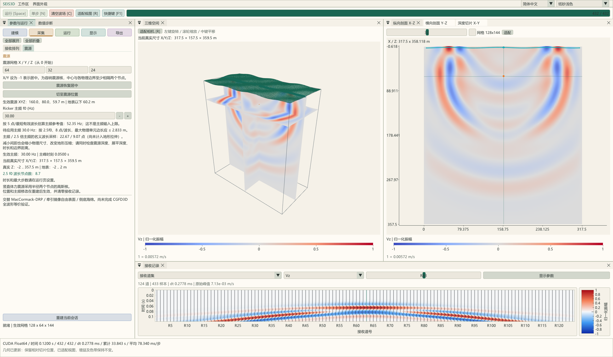
图 16 30 Hz，t=0.12 s，433 个接收时间样本。
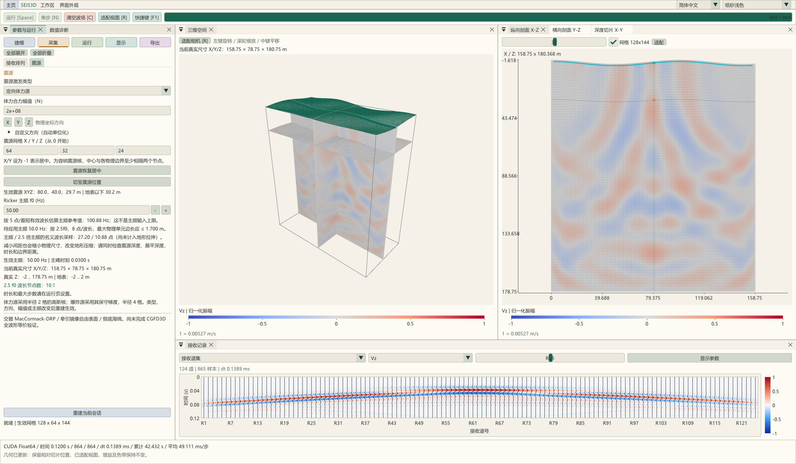
图 17 50 Hz，t=0.12 s，865 个接收时间样本。
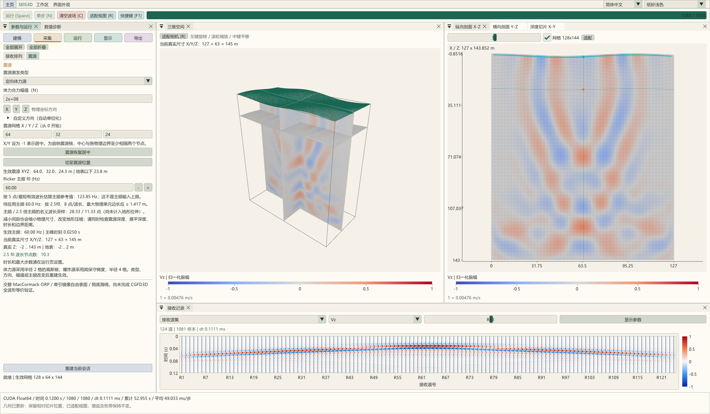
图 18 60 Hz，t=0.12 s，1081 个接收时间样本。图 16—18 是完成源时间窗的运行展示；物理区域随 h 改变，后期已可能受有限边界影响，不用于比较跨模型振幅，也不构成远场精度证据。
基准会话图 2、4—15 的海绵为 6/6/6、强度 3，自动展平，接收起点（2，中心，1）、X 间隔 1；图 3 的材料工况为五层黄土、f₀=12 Hz、源（50，10，20）、T=0.12 s，图示时尚未推进。
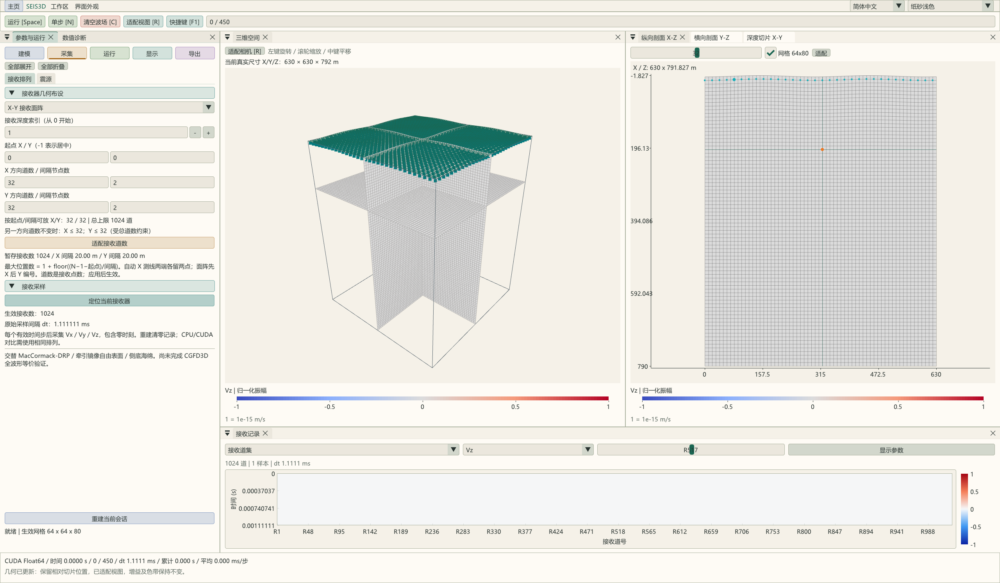
图 19 面阵初始配置：64×64×80，h=10 m，A=2 m、L=300 m，源（32，32，20），f₀=12 Hz，T=0.5 s，C=0.8，步数上限 5000，海绵 6/6/6、强度 3；接收 32×32，X/Y 起点 0、间隔 2、深度索引 1。t=0 的界面只说明排列与容量，不展示其动态精度。
附录 F：数据输出与结果解释
| 数据 | 定义与约定 |
|---|---|
| 接收 CSV | 文件含单位与源／接收坐标注释；数据首列 time_s，可选仅 Vz 或三分量，三分量列序为各位置 Vx、Vy、Vz |
| 时间轴 | 初始 t=0 加每个有效步；等间隔 dt，N 步对应 N+1 行样本 |
| 三分量最大排列 | 1024 位置对应 3072 个分量列，加时间共 3073 列 |
| 曲网格 VTS | 显式三维节点坐标及速度、应力、压力、材料属性，按各字段 SI 单位解释；节点属性及坐标声明为 Float32，ASCII 写出九位有效数字，不能视为 Float64 状态的无损存档 |
| 压力字段 | 历史字段名 MeanNormalStress 实际定义为 $-\operatorname{tr}\sigma/3$，数值符号按压力解释 |
| 处理范围 | CSV/VTS 不含 AGC、显示增益、色带、透明度和显示归一化 |
当前支持导出而未实现任意 VTS 模型导入和 SEG-Y 写出。后处理时应保留接收几何、坐标正方向、源类型、物性、吸收设置及实际 dt，避免仅以文件名推断实验条件。
附录 G：验证边界与后续实验设计
| 评价层面 | 已有检查支持的内容 | 仍需补充的证据 |
|---|---|---|
| 几何与材料 | 平地精确度量、正 J 检查、分层节点归属及物性参与计算 | 更复杂地形质量与强物性跳变收敛 |
| 内点传播 | 指定方向 Fourier 结果、均匀 P/S 波传播检查 | 全角度、长距离及完整误差范数 |
| 自由表面 | 局部变化率闭合与牵引残差检查 | 标准反射／转换解、曲面及 Rayleigh 波误差 |
| 计算后端 | 指定配置下九场和三分量记录一致 | 多设备与大规模长期传播误差统计 |
| 高频运行 | 指定 30/50/60 Hz 加密模型完成源窗 | 固定物理域和源宽度的网格收敛、边界独立性 |
| 人工边界 | 可调海绵与运行监测 | 不同入射角、频率、层厚的反射率 |
建议首先在均匀全空间与平坦半空间中固定物理源和接收位置，用高精度参考解比较位移或速度波形；随后逐项加入地形、材料界面和人工边界。采用 $L2$、$L\infty$ 误差、到时偏差、相位及振幅误差，并至少使用三个网格尺度估计观测收敛率。改变 Y 宽度和边界距离可识别薄域效应，避免将边界污染误判为内点频散。
附录 H：参考文献与软件来源
- Zhang, W., Chen, X. (2006). Traction image method for irregular free surface boundaries in finite difference seismic wave simulation. Geophysical Journal International, 167(1), 337–353. DOI: 10.1111/j.1365-246X.2006.03113.x.
- Zhang, W., Zhang, Z., Chen, X. (2012). Three-dimensional elastic wave numerical modelling in the presence of surface topography by a collocated-grid finite-difference method on curvilinear grids. Geophysical Journal International, 190(1), 358–378. DOI: 10.1111/j.1365-246X.2012.05472.x.
- Tam, C. K. W., Webb, J. C. (1993). Dispersion-Relation-Preserving Finite Difference Schemes for Computational Acoustics. Journal of Computational Physics, 107(2), 262–281. DOI: 10.1006/jcph.1993.1142.
- Virieux, J. (1986). P-SV wave propagation in heterogeneous media: velocity-stress finite-difference method. Geophysics, 51(4), 889–901. 出版社页面.
- Bohlen, T., Saenger, E. H. (2005). Accuracy of heterogeneous staggered-grid finite-difference modeling of Rayleigh waves. WIT Annual Report 2005. 作者机构报告.
- CGFD3D. Curvilinear Grid Finite Difference seismic wave simulation software. 原始软件仓库.
本文描述当前应用实际采用的公式、参数约定和证据范围，不将参考论文或上游软件的完整能力视作本应用已实现内容。软件使用与再分发须遵循随附许可证及第三方声明。